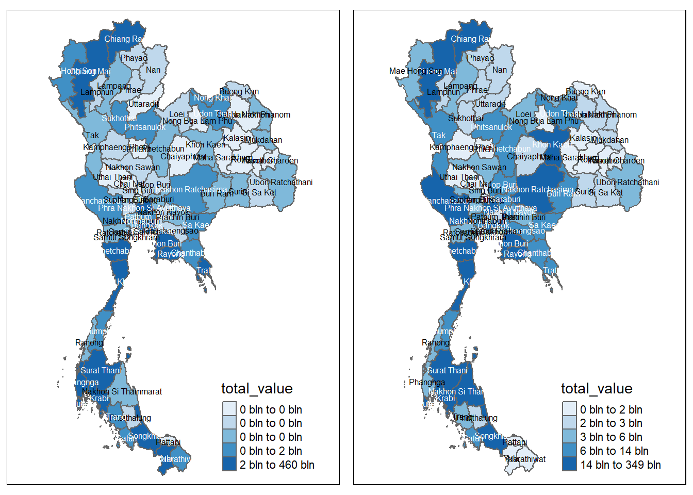
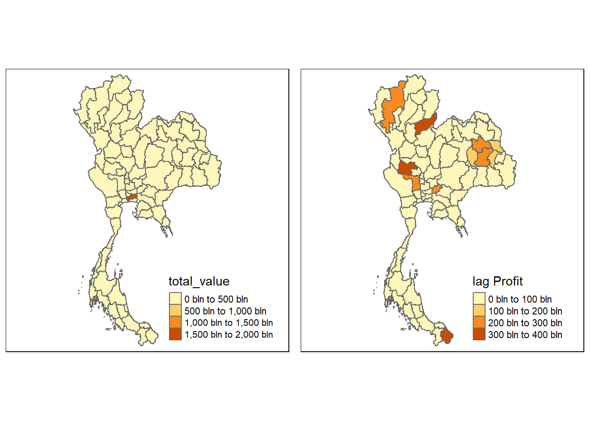

pacman::p_load(sf, spdep, tmap, tidyverse, knitr)
set.seed(123)
tmap_mode('plot')Take Home Exercise 2- Discovering impacts of COVID-19 on Thailand tourism economy at the province level using spatial and spatio-temporal statistics
2 Introduction
Tourism is one of Thailand’s largest industries, accounting for some 20% of the gross domestic product (GDP). In 2019, Thailand earned 90 billion US$ from domestic and international tourism, but the COVID-19 pandemic caused revenues to crash to 24 billion US$ in 2020.
The figure below shows the total revenue for the tourism sector from January 2019 until Feb 2023. The figure reveals that the revenue for the industry have been recovering gradually since September 2021.

However, it is important to note that the tourism economy of Thailand is not evenly distributed- not all provinces make a lot of revenue.
The figure below reveals that the tourism economy of Thailand is carried by five provinces, namely Bangkok, Phuket, Chiang Mai, Sukhothai and Phetchaburi.
2.1 Objectives
The objectives of this exercise are to understand:
if the key indicators of the tourism economy of Thailand are independent from space and space and time.
If the tourism economy is indeed spatial and spatio-temporal dependent. If so, then we would like to detect where the clusters and outliers are, as well as the emerging hot spot/cold spot areas.
2.2 Data and Packages
The data used for this exercise are as follows:
Thailand Domestic Tourism Statistics which is sourced from Kaggle.

Thailand - Subnational Administrative Boundaries which is sourced from Humanitarian Data Exchange. We will use the data at the province level (i.e: ADM1).
The following packages are used:
sf: Provides simple features support for handling and analyzing spatial vector data in R.spdep: A package for spatial dependence and spatial regression analysis, particularly for handling spatial weights.tmap: A flexible visualization package for thematic maps, supporting both static and interactive mapping in R.tidyverse: A collection of R packages designed for data science, emphasizing data manipulation, visualization, and functional programming.knitr: A dynamic report generation tool in R, allowing for the integration of code, results, and narrative in reproducible documents.
We now load these packages into our environment by using the p_load() function of the pacman package.
2.1 Importing the data
2.1.1 Importing the aspatial data
We will now import the aspatial data by implementing the read_csv() function of the readr package as shown in the code chunk below.
tourists=read_csv('data/aspatial/thailand_domestic_tourism_2019_2023.csv')
# Summing the 'value' based on 'province_eng' and 'variable'
summed_data <- tourists %>%
group_by(province_eng, variable) %>%
summarize(total_value = sum(value, na.rm = TRUE))
# View the result
head(summed_data)# A tibble: 6 × 3
# Groups: province_eng [1]
province_eng variable total_value
<chr> <chr> <dbl>
1 Amnat Charoen net_profit_all 1075.
2 Amnat Charoen net_profit_foreign 37.8
3 Amnat Charoen net_profit_thai 1037.
4 Amnat Charoen no_tourist_all 841477
5 Amnat Charoen no_tourist_foreign 12878
6 Amnat Charoen no_tourist_occupied 259406 2.1.2 Importing the geospatial data
We now import the geospatial data using the st_read() function of the sf package.
province=st_read(dsn = "data/geospatial",
layer = "tha_admbnda_adm1_rtsd_20220121")%>%
select(1:5, 17)Reading layer `tha_admbnda_adm1_rtsd_20220121' from data source
`C:\arjxn11\ISSS626-GAA\Take-home_Ex\Take-home_Ex2\data\geospatial'
using driver `ESRI Shapefile'
Simple feature collection with 77 features and 16 fields
Geometry type: MULTIPOLYGON
Dimension: XY
Bounding box: xmin: 97.34336 ymin: 5.613038 xmax: 105.637 ymax: 20.46507
Geodetic CRS: WGS 84We now check the CRS information using the st_crs() function of the sf package and transform the EPSG code using the st_transform() function if it is not 32647, the EPSG code of Thailand.
st_crs(province)Coordinate Reference System:
User input: WGS 84
wkt:
GEOGCRS["WGS 84",
DATUM["World Geodetic System 1984",
ELLIPSOID["WGS 84",6378137,298.257223563,
LENGTHUNIT["metre",1]]],
PRIMEM["Greenwich",0,
ANGLEUNIT["degree",0.0174532925199433]],
CS[ellipsoidal,2],
AXIS["latitude",north,
ORDER[1],
ANGLEUNIT["degree",0.0174532925199433]],
AXIS["longitude",east,
ORDER[2],
ANGLEUNIT["degree",0.0174532925199433]],
ID["EPSG",4326]]st_transform(province, 32647)Simple feature collection with 77 features and 5 fields
Geometry type: MULTIPOLYGON
Dimension: XY
Bounding box: xmin: 325178.8 ymin: 620860.6 xmax: 1213656 ymax: 2263241
Projected CRS: WGS 84 / UTM zone 47N
First 10 features:
Shape_Leng Shape_Area ADM1_EN ADM1_TH ADM1_PCODE
1 2.417227 0.13133873 Bangkok กรุงเทพมหานคร TH10
2 1.695100 0.07926199 Samut Prakan สมุทรปราการ TH11
3 1.251111 0.05323766 Nonthaburi นนทบุรี TH12
4 1.884945 0.12698345 Pathum Thani ปทุมธานี TH13
5 3.041716 0.21393797 Phra Nakhon Si Ayutthaya พระนครศรีอยุธยา TH14
6 1.739908 0.07920961 Ang Thong อ่างทอง TH15
7 5.693342 0.54578838 Lop Buri ลพบุรี TH16
8 1.778326 0.06872655 Sing Buri สิงห์บุรี TH17
9 2.896316 0.20907828 Chai Nat ชัยนาท TH18
10 4.766446 0.29208711 Saraburi สระบุรี TH19
geometry
1 MULTIPOLYGON (((674339.8 15...
2 MULTIPOLYGON (((687139.8 15...
3 MULTIPOLYGON (((644817.9 15...
4 MULTIPOLYGON (((704086 1575...
5 MULTIPOLYGON (((662941.6 16...
6 MULTIPOLYGON (((643472.8 16...
7 MULTIPOLYGON (((751293.3 17...
8 MULTIPOLYGON (((647136.1 16...
9 MULTIPOLYGON (((620165.4 17...
10 MULTIPOLYGON (((757935.1 16...2.1.3 Performing relational join
After performing consistency checks, we notice that the provinces aren’t named correctly in our tourist data-set. We correct the names below.
summed_data$province_eng <- gsub("Nong Bua Lamphu", "Nong Bua Lam Phu", summed_data$province_eng)
summed_data$province_eng <- gsub("Sisaket", "Si Sa Ket", summed_data$province_eng)
summed_data$province_eng <- gsub("Phang Nga", "Phangnga", summed_data$province_eng)
summed_data$province_eng <- gsub("Lopburi", "Lop Buri", summed_data$province_eng)
summed_data$province_eng <- gsub("Chonburi", "Chon Buri", summed_data$province_eng)
summed_data$province_eng <- gsub("Chainat", "Chai Nat", summed_data$province_eng)
summed_data$province_eng <- gsub("Buriram", "Buri Ram", summed_data$province_eng)
summed_data$province_eng <- gsub("Prachinburi", "Prachin Buri", summed_data$province_eng)We will now join the aspatial and geospatial data by using the left_join() function of the package as showing in the code chunk below.
pro_tourism=left_join(summed_data, province, by= c("province_eng"="ADM1_EN"))2.3 Exploratory Data Analysis
2.3.1 Visualizing regional indicators
After successfully completing the relational join, we can now plot a choropleth map to visualize the tourism in each province in Thailand using various functions of the tmap package.
2.3.1.1 Number of tourists
We first take a look at the number of tourists, both foreign and domestic, across all provinces in Thailand.
tourist_foreign=pro_tourism%>%
filter(variable=='no_tourist_foreign')
profit_foreigners=st_as_sf(tourist_foreign)
tourist_foreign=st_as_sf(tourist_foreign)
# Create the interactive basemap
basemap01 <- tm_shape(profit_foreigners) +
tm_polygons(col = "total_value", palette = "Blues", style= 'jenks')+
tm_text("province_eng", size = 0.3)
# Display the interactive map
basemap01
tourist_domestic=pro_tourism%>%
filter(variable=='no_tourist_foreign')%>%
filter(!st_is_empty(geometry))
profit_foreigners=st_as_sf(tourist_domestic)
tourist_domestic=st_as_sf(tourist_domestic)
# Create the interactive basemap
basemap02 <- tm_shape(tourist_domestic) +
tm_polygons(col = "total_value", palette = "Blues", style='jenks')+
tm_text("province_eng", size = 0.3)
# Display the interactive map
basemap02
2.3.1.2 Revenue
We now take a look at the revenue generated by foreign and domestic tourists in Thailand
profit_foreigners=pro_tourism%>%
filter(variable=='net_profit_foreign')
profit_foreigners=st_as_sf(profit_foreigners)
# Create the interactive basemap
basemap <- tm_shape(profit_foreigners) +
tm_polygons(col = "total_value", palette = "Blues", style= 'jenks') +
tm_text("province_eng", size = 0.5)
# Display the interactive map
basemap
profit_domestic=pro_tourism%>%
filter(variable=='net_profit_thai')
profit_foreigners=st_as_sf(profit_domestic)
profit_domestic=st_as_sf(profit_domestic)
# Create the interactive basemap
basemap2 <- tm_shape(profit_domestic) +
tm_polygons(col = "total_value", palette = "Blues", style='jenks') +
tm_text("province_eng", size = 0.5)
# Display the interactive map
basemap2
Bangkok seems to be the most lucrative province for both foreign and domestic tourists.
basemap <- tm_shape(profit_domestic) +
tm_polygons() +
tm_text("province_eng", size=0.5)
gdppc <- qtm(profit_domestic, "total_value")
tmap_arrange(basemap, gdppc, asp=1, ncol=2)2.4 Spatial Analysis
We now implement the poly2nb() function of the spdep package to compute contiguity weight matrices for the study area selected.
Using this function, we are able to build a ‘neighbors list’ based on regions with contiguous boundaries.
In this function, we will pass an argument, ‘queen’, that can be set as either TRUE (default) or FALSE. If the ‘queen’ argument is not explicitly set to FALSE, the function returns a list of first order neighbors using the Queen criteria.
You may refer to the spdep package documentation here to learn more about its functions and arguments.
2.4.1 Spatial Weights
2.4.1.1 Computing Contiguity Spatial Weights
We use the poly2nb() function as shown in the code chunk below. Using this, we are able to compute a Queen contiguity weight matrix.
# Rook contiguity
wm_r <- poly2nb(profit_foreigners, queen=FALSE)
write_rds(wm_r, 'data/rds/wm_r_pro_foreign')
# Queen Contiguity
wm_q <- poly2nb(profit_foreigners, queen=TRUE)
write_rds(wm_q, 'data/rds/wm_q_pro_foreign')wm_r_pro_foreign=read_rds("data/rds/wm_r_pro_foreign")
summary(wm_r_pro_foreign)Neighbour list object:
Number of regions: 77
Number of nonzero links: 352
Percentage nonzero weights: 5.93692
Average number of links: 4.571429
1 region with no links:
48
2 disjoint connected subgraphs
Link number distribution:
0 1 2 3 4 5 6 7 8 9
1 1 5 17 15 17 10 5 4 2
1 least connected region:
71 with 1 link
2 most connected regions:
17 69 with 9 linkswm_q_pro_foreign=read_rds("data/rds/wm_q_pro_foreign")
summary(wm_q_pro_foreign)Neighbour list object:
Number of regions: 77
Number of nonzero links: 352
Percentage nonzero weights: 5.93692
Average number of links: 4.571429
1 region with no links:
48
2 disjoint connected subgraphs
Link number distribution:
0 1 2 3 4 5 6 7 8 9
1 1 5 17 15 17 10 5 4 2
1 least connected region:
71 with 1 link
2 most connected regions:
17 69 with 9 linksWe now repeat the same steps for Domestic tourists.
# Rook contiguity
wm_r <- poly2nb(profit_domestic, queen=FALSE)
write_rds(wm_r, 'data/rds/wm_r_pro_dom')
# Queen Contiguity
wm_q <- poly2nb(profit_domestic, queen=TRUE)
write_rds(wm_q, 'data/rds/wm_q_pro_dom')We now look at a summary of both using the code chunks below.
wm_r_pro_dom=read_rds("data/rds/wm_r_pro_dom")
summary(wm_r_pro_dom)Neighbour list object:
Number of regions: 69
Number of nonzero links: 284
Percentage nonzero weights: 5.965133
Average number of links: 4.115942
1 region with no links:
42
2 disjoint connected subgraphs
Link number distribution:
0 1 2 3 4 5 6 7 9
1 2 7 17 15 11 12 3 1
2 least connected regions:
46 63 with 1 link
1 most connected region:
61 with 9 linkswm_q_pro_dom=read_rds("data/rds/wm_q_pro_dom")
summary(wm_q_pro_dom)Neighbour list object:
Number of regions: 69
Number of nonzero links: 284
Percentage nonzero weights: 5.965133
Average number of links: 4.115942
1 region with no links:
42
2 disjoint connected subgraphs
Link number distribution:
0 1 2 3 4 5 6 7 9
1 2 7 17 15 11 12 3 1
2 least connected regions:
46 63 with 1 link
1 most connected region:
61 with 9 links2.4.1.2 Visualizing Contiguity Spatial Weights
A connectivity graph takes a point and displays a line to each neighboring point. We are working with polygons in this situation, so we need to ensure that our points are in order to produce our connectivity graphs.
Usually, the method of choice will be polygon centroids. We calculate using the sf package before moving onto the graphs. Getting latitude and longitude of the Polygon Centroids.
We need points to associate with each polygon before we can make our connectivity graph. It won’t be as simple as applying the st_centroid() function of the sf sf object: us.bound. We need the coordinates in a separate data-frame for this to work.
To do this, we will use a mapping function which will apply a given function to each element of a vector and returns a vector of the same length. Our input vector will be the geometry column of us.bound.
The function that we implement in this situation will be st_centroid().
We will be using the map_dbl variation of map from the purrr package.
We start by extracting the longitude and latitude values for foreign travellers.
longitude_profit_foreign= map_dbl(profit_foreigners$geometry, ~st_centroid(.x)[[1]])
latitude_profit_foreign= map_dbl(profit_foreigners$geometry, ~st_centroid(.x)[[2]])Now that we have the latitude and longitude values, we can use the cbind() function to put the longitude and latitude values into the same object, coords.
coords_profit_foreign <- cbind(longitude_profit_foreign, latitude_profit_foreign)We use the head() function to verify if coords is in the correct format.
head(coords_profit_foreign) longitude_profit_foreign latitude_profit_foreign
[1,] 104.7414 15.89261
[2,] 100.3485 14.62354
[3,] 100.6235 13.77183
[4,] 103.7109 18.14879
[5,] 102.9567 14.81998
[6,] 101.4254 13.60649longitude_profit_domesticlatitude_profit_domestic=We now create the coords object.
coords_profit_domesticWe can now visualize it using the plot() function as shown in the following code chunks.
plot(profit_foreigners$geometry, border="lightgrey")
plot(wm_r_pro_foreign, coords_profit_foreign, pch = 19, cex = 0.6, add = TRUE, col = "purple")
plot(profit_foreigners$geometry, border="lightgrey")
plot(wm_q_pro_foreign, coords_profit_foreign, pch = 19, cex = 0.6, add = TRUE, col = "purple")plot(profit_domestic$geometry, border="lightgrey")
plot(wm_r_pro_domestic, coords_profit_domestic, pch = 19, cex = 0.6, add = TRUE, col = "purple")2.4.1.3 Computing Distance Based Neighbors
In order to derive distance-based weight matrices, we will implement the dnearneigh() function of the spdep package.
This function identifies neighbors of region points by Euclidean Distance with a distance band with lower d1 and upper d2 bounds controlled by the bounds= argument.
If un-projected coordinates are used and either specified in the coordinates object x or with x as a two column matrix and longlat=TRUE, great circle distances in km will be calculated assuming the WGS84 reference ellipsoid.
2.4.1.3.1 Determining cut-off distance
We must first determine the upper limit for the distance band by using the steps shown below:
Find k Nearest Neighbours: Use
knearneigh()from thespdeppackage to get a matrix of indices for the k nearest neighbours of each point.Convert to Neighbours List: Convert the
knnobject returned byknearneigh()into a neighbours list of classnbusingknn2nb(). This list contains integer vectors with neighbour region number IDs.Calculate Edge Lengths: Use
nbdists()fromspdepto return the lengths of neighbour relationship edges. The function returns distances in the units of the coordinates if projected, otherwise in kilometers.Flatten the List: Remove the list structure of the returned object using
unlist()
k1_pro_foreign <- knn2nb(knearneigh(coords_profit_foreign))
k1dists_pro_foreign <- unlist(nbdists(k1_pro_foreign, coords_profit_foreign, longlat = TRUE))
summary(k1dists_pro_foreign) Min. 1st Qu. Median Mean 3rd Qu. Max.
21.55 51.92 64.33 63.24 76.77 110.94 From the output above, we can infer that the largest first nearest neighbor distance is just under 125KM. Using this value, 125KM, as the upper threshold gives certainty that all units will have at least one neighbor.
2.4.1.3.2 Computing Distance Based Weight Matrix
We now implement the dnearneigh() function to compute the distance weight matrix.
wm_d62_pro_foreign <- dnearneigh(coords_profit_foreign, 0, 111, longlat = TRUE)
wm_d62_pro_foreignNeighbour list object:
Number of regions: 77
Number of nonzero links: 350
Percentage nonzero weights: 5.903188
Average number of links: 4.545455
2 disjoint connected subgraphsFrom the output above, we infer that there are 69 distinct regions, as we identified earlier. There are 368 connections between regions where the distance is within the threshold that we have set. 7.73% of all possible region pairs have a connection. On average, each region is connected to approximately 5.3 other regions.
We now use the combination of table() and card() functions from the spdep package to display the structure of the weight matrix.
table(profit_foreigners$province_eng, card(wm_d62_pro_foreign))
1 2 3 4 5 6 7 8 9 10 11 12 13 14
Amnat Charoen 0 0 0 1 0 0 0 0 0 0 0 0 0 0
Ang Thong 0 0 0 0 0 0 0 0 0 0 1 0 0 0
Bangkok 0 0 0 0 0 0 0 0 0 0 0 1 0 0
Bueng Kan 0 1 0 0 0 0 0 0 0 0 0 0 0 0
Buri Ram 0 1 0 0 0 0 0 0 0 0 0 0 0 0
Chachoengsao 0 0 0 0 0 0 0 0 1 0 0 0 0 0
Chai Nat 0 0 0 0 0 0 1 0 0 0 0 0 0 0
Chaiyaphum 0 1 0 0 0 0 0 0 0 0 0 0 0 0
Chanthaburi 0 0 0 0 1 0 0 0 0 0 0 0 0 0
Chiang Mai 0 0 1 0 0 0 0 0 0 0 0 0 0 0
Chiang Rai 1 0 0 0 0 0 0 0 0 0 0 0 0 0
Chon Buri 0 0 0 0 0 1 0 0 0 0 0 0 0 0
Chumphon 1 0 0 0 0 0 0 0 0 0 0 0 0 0
Kalasin 0 0 0 1 0 0 0 0 0 0 0 0 0 0
Kamphaeng Phet 0 0 0 0 1 0 0 0 0 0 0 0 0 0
Kanchanaburi 0 1 0 0 0 0 0 0 0 0 0 0 0 0
Khon Kaen 0 0 1 0 0 0 0 0 0 0 0 0 0 0
Krabi 0 0 0 0 1 0 0 0 0 0 0 0 0 0
Lampang 0 0 1 0 0 0 0 0 0 0 0 0 0 0
Lamphun 0 1 0 0 0 0 0 0 0 0 0 0 0 0
Loei 1 0 0 0 0 0 0 0 0 0 0 0 0 0
Lop Buri 0 0 0 0 0 0 1 0 0 0 0 0 0 0
Mae Hong Son 1 0 0 0 0 0 0 0 0 0 0 0 0 0
Maha Sarakham 0 0 1 0 0 0 0 0 0 0 0 0 0 0
Mukdahan 0 0 0 0 1 0 0 0 0 0 0 0 0 0
Nakhon Nayok 0 0 0 0 0 0 0 0 0 1 0 0 0 0
Nakhon Pathom 0 0 0 0 0 0 0 0 0 1 0 0 0 0
Nakhon Phanom 0 1 0 0 0 0 0 0 0 0 0 0 0 0
Nakhon Ratchasima 1 0 0 0 0 0 0 0 0 0 0 0 0 0
Nakhon Sawan 0 0 0 0 0 1 0 0 0 0 0 0 0 0
Nakhon Si Thammarat 0 0 0 1 0 0 0 0 0 0 0 0 0 0
Nan 0 1 0 0 0 0 0 0 0 0 0 0 0 0
Narathiwat 0 1 0 0 0 0 0 0 0 0 0 0 0 0
Nong Bua Lam Phu 0 0 0 1 0 0 0 0 0 0 0 0 0 0
Nong Khai 0 0 1 0 0 0 0 0 0 0 0 0 0 0
Nonthaburi 0 0 0 0 0 0 0 0 0 0 0 0 1 0
Pathum Thani 0 0 0 0 0 0 0 0 0 0 0 0 0 1
Pattani 0 0 1 0 0 0 0 0 0 0 0 0 0 0
Phangnga 0 0 1 0 0 0 0 0 0 0 0 0 0 0
Phatthalung 0 0 0 1 0 0 0 0 0 0 0 0 0 0
Phayao 0 1 0 0 0 0 0 0 0 0 0 0 0 0
Phetchabun 0 0 1 0 0 0 0 0 0 0 0 0 0 0
Phetchaburi 0 0 0 1 0 0 0 0 0 0 0 0 0 0
Phichit 0 0 0 1 0 0 0 0 0 0 0 0 0 0
Phitsanulok 0 0 0 1 0 0 0 0 0 0 0 0 0 0
Phra Nakhon Si Ayutthaya 0 0 0 0 0 0 0 0 0 0 0 0 1 0
Phrae 0 0 0 1 0 0 0 0 0 0 0 0 0 0
Phuket 0 1 0 0 0 0 0 0 0 0 0 0 0 0
Prachin Buri 0 0 0 0 0 1 0 0 0 0 0 0 0 0
Prachuap Khiri Khan 1 0 0 0 0 0 0 0 0 0 0 0 0 0
Ranong 0 1 0 0 0 0 0 0 0 0 0 0 0 0
Ratchaburi 0 0 0 0 1 0 0 0 0 0 0 0 0 0
Rayong 0 0 1 0 0 0 0 0 0 0 0 0 0 0
Roi Et 0 0 0 0 1 0 0 0 0 0 0 0 0 0
Sa Kaeo 0 0 1 0 0 0 0 0 0 0 0 0 0 0
Sakon Nakhon 0 0 0 1 0 0 0 0 0 0 0 0 0 0
Samut Prakan 0 0 0 0 0 0 0 0 0 1 0 0 0 0
Samut Sakhon 0 0 0 0 0 0 0 0 1 0 0 0 0 0
Samut Songkhram 0 0 0 0 0 0 0 1 0 0 0 0 0 0
Saraburi 0 0 0 0 0 0 0 0 1 0 0 0 0 0
Satun 0 0 1 0 0 0 0 0 0 0 0 0 0 0
Si Sa Ket 0 1 0 0 0 0 0 0 0 0 0 0 0 0
Sing Buri 0 0 0 0 0 0 0 0 0 1 0 0 0 0
Songkhla 0 0 1 0 0 0 0 0 0 0 0 0 0 0
Sukhothai 0 0 0 1 0 0 0 0 0 0 0 0 0 0
Suphan Buri 0 0 0 0 0 0 0 0 1 0 0 0 0 0
Surat Thani 0 0 0 1 0 0 0 0 0 0 0 0 0 0
Surin 0 1 0 0 0 0 0 0 0 0 0 0 0 0
Tak 1 0 0 0 0 0 0 0 0 0 0 0 0 0
Trang 0 0 0 1 0 0 0 0 0 0 0 0 0 0
Trat 1 0 0 0 0 0 0 0 0 0 0 0 0 0
Ubon Ratchathani 0 1 0 0 0 0 0 0 0 0 0 0 0 0
Udon Thani 0 0 1 0 0 0 0 0 0 0 0 0 0 0
Uthai Thani 0 0 0 0 0 1 0 0 0 0 0 0 0 0
Uttaradit 0 0 1 0 0 0 0 0 0 0 0 0 0 0
Yala 0 1 0 0 0 0 0 0 0 0 0 0 0 0
Yasothon 0 0 1 0 0 0 0 0 0 0 0 0 0 0Next, we implement the n.comp.nb() function to identify the number of connected components in a neighbor list object of class nb.
Note: A connected component is a subset of regions where each region is reachable from any other region within the same subset. The function returns an object that includes the number of connected components (nc) and a vector indicating the component membership for each region.
n_comp_pro_foreign <- n.comp.nb(wm_d62_pro_foreign)
n_comp_pro_foreign$nc[1] 2table(n_comp_pro_foreign$comp.id)
1 2
63 14 2.4.1.3.3 Plotting fixed distance weight matrix
We now plot the distance weight matrix using the plot() function.
plot(profit_foreigners$geometry, border="lightgrey")
plot(wm_d62_pro_foreign, coords_profit_foreign, add=TRUE)
plot(k1_pro_foreign, coords_profit_foreign, add=TRUE, col="purple", length=0.08)
As identified earlier, we see two distinct groups. The upper 63 and the bottom 14.
par(mfrow=c(1,2))
plot(profit_foreigners$geometry, border="lightgrey", main="1st nearest neighbours")
plot(k1_pro_foreign, coords_profit_foreign, add=TRUE, col="red", length=0.08)
plot(profit_foreigners$geometry, border="lightgrey", main="Distance link")
plot(wm_d62_pro_foreign, coords_profit_foreign, add=TRUE, pch = 19, cex = 0.6)2.4.1.4 Weights based on Inversed Distance Weighting (IDW)
We first compute the distances between areas by implementing the nbdists() function of the spdep package.
dist_pro_foreign <- nbdists(wm_q_pro_foreign, coords_profit_foreign, longlat = TRUE)
ids_pro_foreign <- lapply(dist_pro_foreign, function(x) 1/(x))
ids_pro_foreign[[1]]
[1] 0.01283122 0.01137165 0.02317374
[[2]]
[1] 0.01242005 0.02756509 0.03127482 0.02029286
[[3]]
[1] 0.01128043 0.01701948 0.03322088 0.03024035 0.04641391 0.02007407
[[4]]
[1] 0.008785487 0.010451301 0.011784417
[[5]]
[1] 0.005542535 0.007549986 0.010821690 0.007509592 0.013226931
[[6]]
[1] 0.011280434 0.009026604 0.019262215 0.013713812 0.010525478 0.018323726
[7] 0.010089340 0.012920254
[[7]]
[1] 0.01608311 0.02368766 0.01681858 0.01570532
[[8]]
[1] 0.010963897 0.007064074 0.008134706 0.013026280
[[9]]
[1] 0.009026604 0.009398570 0.013102472 0.009765844 0.013223766
[[10]]
[1] 0.005984037 0.010253006 0.012763865 0.013589149 0.004349372
[[11]]
[1] 0.005984037 0.005799456 0.013165076
[[12]]
[1] 0.01926221 0.00939857 0.02240885
[[13]]
[1] 0.005327427 0.017306975 0.007000767
[[14]]
[1] 0.008769672 0.011775171 0.010437208 0.012343675 0.011493123 0.008361253
[[15]]
[1] 0.010254426 0.011527636 0.007714179 0.009533663 0.011111643
[[16]]
[1] 0.007385957 0.007716901 0.010982604 0.004211749 0.010358229
[[17]]
[1] 0.005542535 0.010963897 0.008769672 0.006691737 0.012916807 0.005943019
[7] 0.011054506 0.006514320 0.008588872
[[18]]
[1] 0.01132654 0.01135774 0.00997081 0.01085922
[[19]]
[1] 0.010253006 0.005799456 0.015806184 0.008104541 0.016638036 0.008359249
[7] 0.005157708
[[20]]
[1] 0.012763865 0.015806184 0.006403244
[[21]]
[1] 0.006691737 0.013301389 0.007140588 0.007375029 0.007976693 0.007671985
[[22]]
[1] 0.012420048 0.007064074 0.007670177 0.009705201 0.007575615 0.010664800
[7] 0.018342110 0.015632633
[[23]]
[1] 0.013589149 0.004073493
[[24]]
[1] 0.007549986 0.011775171 0.012916807 0.014293885 0.007462094
[[25]]
[1] 0.012831217 0.010437208 0.010934747 0.009660859 0.008504967 0.013119927
[[26]]
[1] 0.013713812 0.007685469 0.018047546 0.018187683 0.020717010
[[27]]
[1] 0.017019481 0.007385957 0.031941419 0.015333035 0.014028638 0.024413177
[7] 0.012579923
[[28]]
[1] 0.008785487 0.010934747 0.015545066
[[29]]
[1] 0.010821690 0.008134706 0.005943019 0.007670177 0.007685469 0.008917878
[7] 0.007605151 0.008117703
[[30]]
[1] 0.016083111 0.010254426 0.009705201 0.007982010 0.014915995 0.011395871
[7] 0.005405036 0.012326369
[[31]]
[1] 0.011326537 0.009956219 0.005544296 0.009359481 0.010554311
[[32]]
[1] 0.012495409 0.009206376 0.007880812
[[33]]
[1] 0.01359979 0.01841909
[[34]]
[1] 0.01105451 0.01330139 0.01530233
[[35]]
[1] 0.010451301 0.007140588 0.008232097 0.017483864
[[36]]
[1] 0.03322088 0.03194142 0.02860548 0.02049667
[[37]]
[1] 0.03024035 0.01052548 0.01804755 0.02860548 0.02835278 0.01391843
[[38]]
[1] 0.01359979 0.01090219 0.01634790
[[39]]
[1] 0.011357744 0.006830201 0.011741631
[[40]]
[1] 0.009956219 0.013192981 0.012040582 0.019039684
[[41]]
[1] 0.013165076 0.008104541 0.012495409 0.008669969
[[42]]
[1] 0.013026280 0.006514320 0.007375029 0.007575615 0.007982010 0.011614531
[7] 0.009899588
[[43]]
[1] 0.009013905 0.015334899 0.016262271
[[44]]
[1] 0.01152764 0.01491600 0.01161453 0.01209489
[[45]]
[1] 0.007714179 0.007976693 0.009899588 0.012094889 0.010632695 0.011816759
[[46]]
[1] 0.02756509 0.01066480 0.01533303 0.02049667 0.02835278 0.01630089 0.01339948
[[47]]
[1] 0.016638036 0.009206376 0.008669969 0.009069811 0.014433186
[[48]]
numeric(0)
[[49]]
[1] 0.018323726 0.018187683 0.008917878 0.012788384
[[50]]
[1] 0.005327427 0.009013905
[[51]]
[1] 0.017306975 0.006830201 0.009085630
[[52]]
[1] 0.007716901 0.014028638 0.015334899 0.014563573 0.023042875
[[53]]
[1] 0.01310247 0.02240885
[[54]]
[1] 0.012343675 0.014293885 0.009660859 0.007581777 0.008645806 0.017784128
[[55]]
[1] 0.007509592 0.010089340 0.009765844 0.007605151 0.012788384
[[56]]
[1] 0.011784417 0.011493123 0.008504967 0.015545066 0.008232097 0.009781624
[[57]]
[1] 0.04641391 0.01292025
[[58]]
[1] 0.02007407 0.02441318 0.01456357 0.02941852
[[59]]
[1] 0.01626227 0.02304288 0.02941852
[[60]]
[1] 0.018342110 0.020717010 0.008117703 0.013918429 0.016300886
[[61]]
[1] 0.01319298 0.01448029 0.01168217
[[62]]
[1] 0.03127482 0.02368766 0.01563263 0.01139587 0.01688512
[[63]]
[1] 0.007581777 0.013015715 0.011409610 0.008690817
[[64]]
[1] 0.005544296 0.010902192 0.012040582 0.014480293 0.008955556
[[65]]
[1] 0.009533663 0.008359249 0.010632695 0.009069811 0.008697288 0.009934394
[[66]]
[1] 0.02029286 0.01681858 0.01098260 0.01257992 0.01339948 0.01688512 0.01076819
[[67]]
[1] 0.007000767 0.009970810 0.009359481 0.011741631 0.009085630
[[68]]
[1] 0.013226931 0.007462094 0.008645806 0.013015715
[[69]]
[1] 0.004349372 0.011111643 0.004211749 0.005157708 0.006403244 0.004073493
[7] 0.005405036 0.008697288 0.005949594
[[70]]
[1] 0.01085922 0.01055431 0.01903968 0.01168217
[[71]]
[1] 0.01322377
[[72]]
[1] 0.011371651 0.011409610 0.008739397
[[73]]
[1] 0.008361253 0.008588872 0.007671985 0.015302325 0.017483864 0.009781624
[[74]]
[1] 0.015705321 0.010358229 0.012326369 0.010768191 0.005949594
[[75]]
[1] 0.007880812 0.011816759 0.014433186 0.009934394
[[76]]
[1] 0.018419095 0.016347902 0.008955556
[[77]]
[1] 0.023173744 0.013119927 0.017784128 0.008690817 0.0087393972.4.1.5 Row-Standardized Weights Matrix
We now need to assign weights to each neighboring polygon. We use equal weights (style=“W”), where each neighboring polygon is assigned a weight of 1 divided by the number of neighbors.
This means each neighboring county’s weight is calculated as 1/(# of neighbors), and these weights are then used to sum the weighted income values.
While this method is intuitive for summarizing neighbors’ values, it has a drawback: polygons at the edges of the study area may rely on fewer neighbors, potentially skewing the spatial autocorrelation results.
Note: For simplicity, we’ll use the style=“W” option in this example, but be aware that more robust options, such as style=“B”, are available.
rswm_q_pro_foreign <- nb2listw(wm_q_pro_foreign, style="W", zero.policy = TRUE)
rswm_q_pro_foreignCharacteristics of weights list object:
Neighbour list object:
Number of regions: 77
Number of nonzero links: 352
Percentage nonzero weights: 5.93692
Average number of links: 4.571429
1 region with no links:
48
2 disjoint connected subgraphs
Weights style: W
Weights constants summary:
n nn S0 S1 S2
W 76 5776 76 36.26113 315.652Setting the argument zero.policy to TRUE allows for lists of non-neighbors. This should be used with caution as users may not be aware of missing neighbors in their data however setting zero,policy to FALSE would return an error.
The nb2listw() function requires an input of class nb, representing a neighborhood object. The function’s two key arguments are style and zero.policy.
The
styleargument defines how the weights are calculated. It can take several values:"B": Binary coding, where weights are either 0 or 1."W": Row-standardized, where the sum of weights across all neighbors equals 1."C": Globally standardized, where the sum of weights across all neighbors equals the total number of neighbors."U": A variation of"C", where weights are normalized by the number of neighbors."S": A variance-stabilizing scheme proposed by Tiefelsdorf et al. (1999), which adjusts weights based on the number of neighbors.
The
zero.policyargument, when set toTRUE, handles regions with no neighbors by assigning them a weight vector of zero length. This results in a spatial lag value of zero for regions without neighbors, which may or may not be a suitable assumption depending on the context. For such regions, the spatially lagged value is computed as the sum of the products of a zero vector with any numerical vectorx, effectively setting the lagged value to zero for those regions.
The code chunk below is implemented to check the weights of the first polygons three neighbors type:
rswm_q_pro_foreign$weights[10][[1]]
[1] 0.2 0.2 0.2 0.2 0.2Each neighbor is assigned a 0.33 of the total weight. This means that when R computes the average neighboring income values, each neighbor’s income will be multiplied by 0.125 before being tallied.
Using the same method, we derive a row standardized distance weight matrix by using the code chunk below.
rswm_ids_pro_foreign <- nb2listw(wm_q_pro_foreign, glist=ids_pro_foreign, style="B", zero.policy=TRUE)
rswm_ids_pro_foreignCharacteristics of weights list object:
Neighbour list object:
Number of regions: 77
Number of nonzero links: 352
Percentage nonzero weights: 5.93692
Average number of links: 4.571429
1 region with no links:
48
2 disjoint connected subgraphs
Weights style: B
Weights constants summary:
n nn S0 S1 S2
B 76 5776 4.455002 0.1398557 1.2775782.4.1.6 Application of Spatial Weight Matrix
We now create four different spatial lagged variables:
spatial lag with row-standardized weights
spatial lag as a sum of neighbouring values
spatial window average
spatial window sum
2.4.1.6.1 Spatial Lag With Row-Standardized Weights
We now compute the average neighbor profit value for each polygon. We often refer to these values as Spatially Lagged Values.
pro_foreign.lag <- lag.listw(rswm_q_pro_foreign, profit_foreigners$total_value)
pro_foreign.lag [1] 8515.193 17115.122 9786.125 8146.420 23682.230 125379.236
[7] 8592.825 32855.363 60754.064 25849.308 69950.727 31920.867
[13] 49495.860 14466.082 12682.008 12285.500 15514.671 28358.838
[19] 45153.527 74359.923 20299.697 19047.053 105254.185 13751.272
[25] 3746.675 21001.444 127335.297 5904.817 16980.569 9149.894
[31] 41815.892 5435.180 3151.225 25886.787 11707.842 199104.537
[37] 139465.317 23475.267 42985.720 34077.745 27604.423 15820.801
[43] 38026.663 15162.938 9194.675 11540.620 7792.872 0.000
[49] 25026.545 46017.585 25713.710 36364.686 102251.090 4483.118
[55] 23315.958 9350.865 377986.320 193862.645 30662.133 25467.052
[61] 29101.100 9679.726 7072.495 13507.610 11402.520 19535.543
[67] 28633.090 6447.347 35931.461 33712.050 20841.120 2536.993
[73] 12405.023 24830.676 11022.135 22918.337 6639.368We can append the spatially lagged profit values onto our profit_foreigners sf data-frame by using the code chunk shown below.
lag.list_pro_foreign <- list(profit_foreigners$province_eng, lag.listw(rswm_q_pro_foreign, profit_foreigners$total_value))
lag.res_pro_foreign <- as.data.frame(lag.list_pro_foreign)
colnames(lag.res_pro_foreign) <- c("province_eng", "lag Profit")
profit_foreigners <- left_join(profit_foreigners,lag.res_pro_foreign)We now plot the actual profit and spatial lag profits side by side to facilitate comparison.
pro_foreign <- qtm(profit_foreigners, "total_value")
lag_pro_foreign <- qtm(profit_foreigners, "lag Profit")
tmap_arrange(pro_foreign, lag_pro_foreign, asp=1, ncol=2)
We see a difference in the surrounding regions of Bangkok as well as Mae Hong Son, all of which are in a higher band as compared to the non-spatially lagged values.
2.4.1.6.2 Spatial Window Sum
The spatial window sum is the counter part of the window average, but without using row-standardized weights.
To add the diagonal element to the neighbour list, we just need to use include.self() from spdep.
wm_qs_profit <- include.self(wm_q_pro_foreign)
wm_qs_profitNeighbour list object:
Number of regions: 77
Number of nonzero links: 429
Percentage nonzero weights: 7.235622
Average number of links: 5.571429
2 disjoint connected subgraphsWe now assign binary weights to the neighbour structure that includes the diagonal element.
b_weights <- lapply(wm_qs_profit, function(x) 0*x + 1)
b_weights[1][[1]]
[1] 1 1 1 1Notice that now [1] has four neighbours instead of three.
Again, we use nb2listw() and glist() to explicitly assign weight values.
b_weights2 <- nb2listw(wm_qs_profit,
glist = b_weights,
style = "B")
b_weights2Characteristics of weights list object:
Neighbour list object:
Number of regions: 77
Number of nonzero links: 429
Percentage nonzero weights: 7.235622
Average number of links: 5.571429
2 disjoint connected subgraphs
Weights style: B
Weights constants summary:
n nn S0 S1 S2
B 77 5929 429 858 10572With our newly obtained weight structure, we can compute the lag variable with lag.listw().
w_sum_profit <- list(profit_foreigners$province_eng, lag.listw(b_weights2, profit_foreigners$total_value))
w_sum_profit[[1]]
[1] "Amnat Charoen" "Ang Thong"
[3] "Bangkok" "Bueng Kan"
[5] "Buri Ram" "Chachoengsao"
[7] "Chai Nat" "Chaiyaphum"
[9] "Chanthaburi" "Chiang Mai"
[11] "Chiang Rai" "Chon Buri"
[13] "Chumphon" "Kalasin"
[15] "Kamphaeng Phet" "Kanchanaburi"
[17] "Khon Kaen" "Krabi"
[19] "Lampang" "Lamphun"
[21] "Loei" "Lop Buri"
[23] "Mae Hong Son" "Maha Sarakham"
[25] "Mukdahan" "Nakhon Nayok"
[27] "Nakhon Pathom" "Nakhon Phanom"
[29] "Nakhon Ratchasima" "Nakhon Sawan"
[31] "Nakhon Si Thammarat" "Nan"
[33] "Narathiwat" "Nong Bua Lam Phu"
[35] "Nong Khai" "Nonthaburi"
[37] "Pathum Thani" "Pattani"
[39] "Phangnga" "Phatthalung"
[41] "Phayao" "Phetchabun"
[43] "Phetchaburi" "Phichit"
[45] "Phitsanulok" "Phra Nakhon Si Ayutthaya"
[47] "Phrae" "Phuket"
[49] "Prachin Buri" "Prachuap Khiri Khan"
[51] "Ranong" "Ratchaburi"
[53] "Rayong" "Roi Et"
[55] "Sa Kaeo" "Sakon Nakhon"
[57] "Samut Prakan" "Samut Sakhon"
[59] "Samut Songkhram" "Saraburi"
[61] "Satun" "Sing Buri"
[63] "Si Sa Ket" "Songkhla"
[65] "Sukhothai" "Suphan Buri"
[67] "Surat Thani" "Surin"
[69] "Tak" "Trang"
[71] "Trat" "Ubon Ratchathani"
[73] "Udon Thani" "Uthai Thani"
[75] "Uttaradit" "Yala"
[77] "Yasothon"
[[2]]
[1] 26582.87 70969.97 799461.22 27377.55 133095.40 1018262.06
[7] 37817.79 136841.09 324611.44 321666.82 292685.82 279423.66
[13] 162599.55 89580.76 67843.49 136157.92 180321.65 187047.95
[19] 328646.09 227691.21 133757.06 166930.70 221650.34 71460.13
[25] 30333.88 121850.61 905116.22 24048.13 189877.60 85395.80
[31] 242473.74 25256.20 8564.20 78552.16 58014.62 806725.06
[37] 842886.09 72741.63 143822.76 142424.94 115278.19 132890.12
[43] 192003.19 64701.16 77045.19 116594.69 45026.35 99190.48
[49] 111899.38 185178.19 84322.13 191623.18 264195.49 30513.79
[55] 130581.36 63027.52 765027.53 779714.03 103123.62 145193.87
[61] 109030.66 50802.76 33076.27 131715.48 75613.87 152440.53
[67] 191329.01 32772.54 341471.24 151860.11 52027.33 23515.33
[73] 99442.01 128232.17 49471.59 72741.63 34984.24Next, we will convert the lag variable listw object into a data.frame by using as.data.frame().
w_sum_profit.res <- as.data.frame(w_sum_profit)
colnames(w_sum_profit.res) <- c("province_eng", "w_sum Profit")Do note that the second command line on the code chunk above renames the field names of w_sum_profit.res object into province_eng and w_sum Profit respectively.
Next, the code chunk below will be used to append w_sum Profit values onto our profit sf data.frame by using left_join() of dplyr package.
profit_foreigners <- left_join(profit_foreigners, w_sum_profit.res)To compare the values of lag Profit and Spatial window average, the kable() function of the Knitr package is used to prepare a table using the code chunk below.
profit_foreigners %>%
select("province_eng", "total_value", "w_sum Profit") %>%
kable()| province_eng | total_value | w_sum Profit | geometry |
|---|---|---|---|
| Amnat Charoen | 1037.29 | 26582.87 | MULTIPOLYGON (((104.9598 16… |
| Ang Thong | 2509.48 | 70969.97 | MULTIPOLYGON (((100.3332 14… |
| Bangkok | 740744.47 | 799461.22 | MULTIPOLYGON (((100.6139 13… |
| Bueng Kan | 2938.29 | 27377.55 | MULTIPOLYGON (((103.405 18…. |
| Buri Ram | 14684.25 | 133095.40 | MULTIPOLYGON (((102.9303 15… |
| Chachoengsao | 15228.17 | 1018262.06 | MULTIPOLYGON (((101.0612 13… |
| Chai Nat | 3446.49 | 37817.79 | MULTIPOLYGON (((100.1199 15… |
| Chaiyaphum | 5419.64 | 136841.09 | MULTIPOLYGON (((101.5603 16… |
| Chanthaburi | 20841.12 | 324611.44 | MULTIPOLYGON (((102.2517 12… |
| Chiang Mai | 192420.28 | 321666.82 | MULTIPOLYGON (((99.52512 20… |
| Chiang Rai | 82833.64 | 292685.82 | MULTIPOLYGON (((99.96093 20… |
| Chon Buri | 183661.06 | 279423.66 | MULTIPOLYGON (((100.9719 12… |
| Chumphon | 14111.97 | 162599.55 | MULTIPOLYGON (((99.19067 10… |
| Kalasin | 2784.27 | 89580.76 | MULTIPOLYGON (((103.584 17…. |
| Kamphaeng Phet | 4433.45 | 67843.49 | MULTIPOLYGON (((99.48875 16… |
| Kanchanaburi | 74730.42 | 136157.92 | MULTIPOLYGON (((98.58631 15… |
| Khon Kaen | 40689.61 | 180321.65 | MULTIPOLYGON (((102.7072 17… |
| Krabi | 73612.60 | 187047.95 | MULTIPOLYGON (((99.11329 7…. |
| Lampang | 12571.40 | 328646.09 | MULTIPOLYGON (((99.58445 19… |
| Lamphun | 4611.44 | 227691.21 | MULTIPOLYGON (((99.18821 18… |
| Loei | 11958.88 | 133757.06 | MULTIPOLYGON (((102.095 18…. |
| Lop Buri | 14554.28 | 166930.70 | MULTIPOLYGON (((101.3453 15… |
| Mae Hong Son | 11141.97 | 221650.34 | MULTIPOLYGON (((98.0591 19…. |
| Maha Sarakham | 2703.77 | 71460.13 | MULTIPOLYGON (((103.1562 16… |
| Mukdahan | 7853.83 | 30333.88 | MULTIPOLYGON (((104.2527 16… |
| Nakhon Nayok | 16843.39 | 121850.61 | MULTIPOLYGON (((101.2827 14… |
| Nakhon Pathom | 13769.14 | 905116.22 | MULTIPOLYGON (((100.2231 14… |
| Nakhon Phanom | 6333.68 | 24048.13 | MULTIPOLYGON (((104.192 18…. |
| Nakhon Ratchasima | 54033.05 | 189877.60 | MULTIPOLYGON (((102.3144 15… |
| Nakhon Sawan | 12196.65 | 85395.80 | MULTIPOLYGON (((100.0266 16… |
| Nakhon Si Thammarat | 33394.28 | 242473.74 | MULTIPOLYGON (((99.77467 9…. |
| Nan | 8950.66 | 25256.20 | MULTIPOLYGON (((100.8948 19… |
| Narathiwat | 2261.75 | 8564.20 | MULTIPOLYGON (((101.6323 6…. |
| Nong Bua Lam Phu | 891.80 | 78552.16 | MULTIPOLYGON (((102.2866 17… |
| Nong Khai | 11183.25 | 58014.62 | MULTIPOLYGON (((103.2985 18… |
| Nonthaburi | 10306.91 | 806725.06 | MULTIPOLYGON (((100.3415 14… |
| Pathum Thani | 6094.19 | 842886.09 | MULTIPOLYGON (((100.8916 14… |
| Pattani | 2315.83 | 72741.63 | MULTIPOLYGON (((101.2827 6…. |
| Phangnga | 14865.60 | 143822.76 | MULTIPOLYGON (((98.61471 7…. |
| Phatthalung | 6113.96 | 142424.94 | MULTIPOLYGON (((99.96416 7…. |
| Phayao | 4860.50 | 115278.19 | MULTIPOLYGON (((100.4195 19… |
| Phetchabun | 22144.51 | 132890.12 | MULTIPOLYGON (((101.3987 17… |
| Phetchaburi | 77923.20 | 192003.19 | MULTIPOLYGON (((99.75869 13… |
| Phichit | 4049.41 | 64701.16 | MULTIPOLYGON (((100.2165 16… |
| Phitsanulok | 21877.14 | 77045.19 | MULTIPOLYGON (((101.0033 17… |
| Phra Nakhon Si Ayutthaya | 35810.35 | 116594.69 | MULTIPOLYGON (((100.5131 14… |
| Phrae | 6061.99 | 45026.35 | MULTIPOLYGON (((100.1597 18… |
| Phuket | 99190.48 | 99190.48 | MULTIPOLYGON (((98.31437 7…. |
| Prachin Buri | 11793.20 | 111899.38 | MULTIPOLYGON (((101.4881 14… |
| Prachuap Khiri Khan | 93143.02 | 185178.19 | MULTIPOLYGON (((99.56326 11… |
| Ranong | 7181.00 | 84322.13 | MULTIPOLYGON (((98.35294 9…. |
| Ratchaburi | 9799.75 | 191623.18 | MULTIPOLYGON (((99.8821 13…. |
| Rayong | 59693.31 | 264195.49 | MULTIPOLYGON (((101.4421 12… |
| Roi Et | 3615.08 | 30513.79 | MULTIPOLYGON (((104.314 16…. |
| Sa Kaeo | 14001.57 | 130581.36 | MULTIPOLYGON (((102.1877 14… |
| Sakon Nakhon | 6922.33 | 63027.52 | MULTIPOLYGON (((103.5404 18… |
| Samut Prakan | 9054.89 | 765027.53 | MULTIPOLYGON (((100.7306 13… |
| Samut Sakhon | 4263.45 | 779714.03 | MULTIPOLYGON (((100.3091 13… |
| Samut Songkhram | 11137.22 | 103123.62 | MULTIPOLYGON (((100.0116 13… |
| Saraburi | 17858.61 | 145193.87 | MULTIPOLYGON (((101.3994 15… |
| Satun | 21727.36 | 109030.66 | MULTIPOLYGON (((100.0903 6…. |
| Sing Buri | 2404.13 | 50802.76 | MULTIPOLYGON (((100.3691 15… |
| Si Sa Ket | 4786.29 | 33076.27 | MULTIPOLYGON (((104.1052 15… |
| Songkhla | 64177.43 | 131715.48 | MULTIPOLYGON (((100.5973 7…. |
| Sukhothai | 7198.75 | 75613.87 | MULTIPOLYGON (((99.60051 17… |
| Suphan Buri | 15691.73 | 152440.53 | MULTIPOLYGON (((99.37118 15… |
| Surat Thani | 48163.56 | 191329.01 | MULTIPOLYGON (((99.96396 9…. |
| Surin | 6983.15 | 32772.54 | MULTIPOLYGON (((103.1336 15… |
| Tak | 18088.09 | 341471.24 | MULTIPOLYGON (((97.97318 17… |
| Trang | 17011.91 | 151860.11 | MULTIPOLYGON (((99.47579 6…. |
| Trat | 31186.21 | 52027.33 | MULTIPOLYGON (((102.5216 11… |
| Ubon Ratchathani | 15904.35 | 23515.33 | MULTIPOLYGON (((105.0633 16… |
| Udon Thani | 25011.87 | 99442.01 | MULTIPOLYGON (((102.0581 18… |
| Uthai Thani | 4078.79 | 128232.17 | MULTIPOLYGON (((99.13905 15… |
| Uttaradit | 5383.05 | 49471.59 | MULTIPOLYGON (((101.0924 18… |
| Yala | 3986.62 | 72741.63 | MULTIPOLYGON (((101.2927 6…. |
| Yasothon | 1787.40 | 34984.24 | MULTIPOLYGON (((104.3952 16… |
We now plot the actual profit and w_sum_profit maps next to each other using the qtm() function of the tmap package.
# Create the first map for 'total_value' using Jenks classification
profit_map <- tm_shape(profit_foreigners) +
tm_polygons("total_value", style = "jenks", palette = "Blues", title = "Total Value") +
tm_layout(legend.outside = TRUE)
# Create the second map for 'w_sum Profit' using Jenks classification
w_sum_profit_map <- tm_shape(profit_foreigners) +
tm_polygons("w_sum Profit", style = "jenks", palette = "Reds", title = "W Sum Profit") +
tm_layout(legend.outside = TRUE)
tmap_arrange(profit_map, w_sum_profit_map, ncol = 2)2.4.2 Global Measures of Spatial Autocorrelation
We now conduct Moran’s I statistics testing by using the moran.test() function of the spdep package.
Statistical tests are conducted at a 5% significance level.
The hypotheses for the test are as follows:
H0: Regions with similar levels of profit from tourism are randomly distributed.
H1: Regions with similar levels of profit from tourism are not randomly distributed and exhibit spatial clustering.
moran.test(profit_foreigners$total_value,
listw=rswm_q_pro_foreign,
zero.policy = TRUE,
na.action=na.omit)
Moran I test under randomisation
data: profit_foreigners$total_value
weights: rswm_q_pro_foreign
n reduced by no-neighbour observations
Moran I statistic standard deviate = -0.59004, p-value = 0.7224
alternative hypothesis: greater
sample estimates:
Moran I statistic Expectation Variance
-0.037892905 -0.013333333 0.001732513 From the output above, we can infer the following:
The p-value 0.7224>0.05, indicating that the observed spatial autocorrelation is not statistically significant.
Moran’s I statistic: The observed value of -0.037 indicates no spatial autocorrelation, meaning that regions with similar levels of profit from tourism are randomly distributed.
There isn’t sufficient evidence to reject H0 and we conclude that there is no spatial clustering with regards to profits from tourism in Thailand.
If Morans I Statistic is = 0, there is Complete Random Spatial Distribution.
2.4.2.1.1 Monte Carlo Moran’s I
We now implement the moran.mc() function of the spdep package. In this scenario, we will run 1000 simulations.
bperm= moran.mc(profit_foreigners$total_value,
listw=rswm_q_pro_foreign,
nsim=999,
zero.policy = TRUE,
na.action=na.omit)
bperm
Monte-Carlo simulation of Moran I
data: profit_foreigners$total_value
weights: rswm_q_pro_foreign
number of simulations + 1: 1000
statistic = -0.037893, observed rank = 326, p-value = 0.674
alternative hypothesis: greaterFrom the above output, notice that the observed rank is 326. This indicates that the observed Moran’s I value of -0.037893 is not ‘unusual’ compared to the distribution that was generated by the simulations run. This further supports the high p-value and reinforces our earlier conclusion that there is no significant spatial autocorrelation in the data.
We visualize the test statistics obtained from the above simulation by implementing the below code chunk.
# Mean
mean(bperm$res[1:999])[1] -0.0148562# Variance
var(bperm$res[1:999])[1] 0.001610468# Summary
summary(bperm$res[1:999]) Min. 1st Qu. Median Mean 3rd Qu. Max.
-0.103109 -0.044015 -0.024277 -0.014856 0.004573 0.163729 hist(bperm$res,
freq=TRUE,
breaks=20,
xlab="Simulated Moran's I")
abline(v=0,
col="red") We now implement a further test to verify if our findings from the above test are indeed correct.
The Geary’s C test for spatial autocorrelation is implemented by using the geary.test() function of the spdep package.
geary.test(profit_foreigners$total_value, listw=rswm_q_pro_foreign)
Geary C test under randomisation
data: profit_foreigners$total_value
weights: rswm_q_pro_foreign
n reduced by no-neighbour observations
Geary C statistic standard deviate = -1.1668, p-value = 0.8784
alternative hypothesis: Expectation greater than statistic
sample estimates:
Geary C statistic Expectation Variance
1.19642838 1.00000000 0.02834019 We once again see that the p-value (0.8784) is greater than 0.05. We do not have sufficient evidence to reject the null hypothesis. In fact, from the Geary C statistic value, we infer that there is actually negative spatial autocorrelation.
2.4.2.2.1 Monte Carlo Geary’s C
We implement the the geary.mc() function of the spdep package to conduct 1000 simulations.
bperm=geary.mc(profit_foreigners$total_value, listw=rswm_q_pro_foreign,
nsim=999)
bperm
Monte-Carlo simulation of Geary C
data: profit_foreigners$total_value
weights: rswm_q_pro_foreign
number of simulations + 1: 1000
statistic = 1.1964, observed rank = 870, p-value = 0.87
alternative hypothesis: greaterThe simulations above reinforce our earlier conclusion.
2.4.2.3 Spatial Correlogram
Spatial correlograms are a powerful tool for analyzing patterns of spatial autocorrelation in your data or model residuals. They illustrate how the correlation between pairs of spatial observations changes as the distance (or lag) between them increases. Essentially, they plot an index of autocorrelation, such as Moran’s I or Geary’s C, against distance.
While correlograms are not as central to geostatistics as variograms—an essential concept in that field—they offer valuable insights as an exploratory and descriptive tool. In fact, for examining spatial autocorrelation, correlograms often provide more detailed information than variograms, making them particularly useful for initial spatial data analysis.
We implement the sp.correlogram() function of the spdep package to compute a 6-lag spatial correlogram of profit from tourism in Thailand. The global spatial autocorrelation used in Moran’s I.
The plot() of base Graph is then used to plot the output.
MI_corr <- sp.correlogram(wm_q_pro_foreign,
profit_foreigners$total_value,
order=6,
method="I",
style="W", zero.policy = TRUE)
plot(MI_corr)The plot above may not allow us to provide complete interpretation. This is because not all autocorrelation values are statistically significant. Hence, it is important for us to examine the full analysis report by printing out the analysis results as in the code chunk below.
print(MI_corr)Spatial correlogram for profit_foreigners$total_value
method: Moran's I
estimate expectation variance standard deviate Pr(I) two sided
1 (76) -0.03789290 -0.01333333 0.00173251 -0.5900 0.5552
2 (76) 0.01980178 -0.01333333 0.00107233 1.0119 0.3116
3 (76) 0.00549104 -0.01333333 0.00085342 0.6444 0.5193
4 (76) 0.02193821 -0.01333333 0.00091591 1.1655 0.2438
5 (76) -0.05085780 -0.01333333 0.00104621 -1.1601 0.2460
6 (76) -0.04029150 -0.01333333 0.00152584 -0.6901 0.4901From above, we can conclude that there is NO spatial autocorrelation.
We implement the sp.correlogram() of spdep package is used to compute a 6-lag spatial correlogram of total_value, profit. The global spatial autocorrelation used in Geary’s C. The plot() of base Graph is then used to plot the output.
GC_corr <- sp.correlogram(wm_q_pro_foreign,
profit_foreigners$total_value,
order=6,
method="C",
style="W", zero.policy = TRUE)
plot(GC_corr)
Similar to the step done for Moran’s I, we will print out the analysis report by using the code chunk below.
print(GC_corr)Spatial correlogram for profit_foreigners$total_value
method: Geary's C
estimate expectation variance standard deviate Pr(I) two sided
1 (76) 1.196428 1.000000 0.028340 1.1668 0.2433
2 (76) 1.059658 1.000000 0.024647 0.3800 0.7039
3 (76) 0.920646 1.000000 0.026276 -0.4895 0.6245
4 (76) 0.951389 1.000000 0.043070 -0.2342 0.8148
5 (76) 1.100042 1.000000 0.092241 0.3294 0.7419
6 (76) 0.977445 1.000000 0.188328 -0.0520 0.9585Indeed, our findings are reinforced.
2.4.3 Local Indicators of Spatial Association
Local Indicators of Spatial Association or LISA are statistics that evaluate the existence of clusters and/or outliers in the spatial arrangement of a given variable. For instance if we are studying distribution of profits from tourism across Thailand, local clusters in profit mean that there are counties that have higher or lower rates than is to be expected by chance alone; that is, the values occurring are above or below those of a random distribution in space.
2.4.3.1 Computing Local Moran’s I
We implement the localmoran() function of spdep compute the local Moran’s I statistic. This function helps us compute li values, given a set of zi values and a listw object providing neighbor weighting information for the polygon associated with the zi values.
We compute Local Moran’s I for Profits from Tourism at the County Level
fips <- order(profit_foreigners$province_eng)
localMI <- localmoran(profit_foreigners$total_value, rswm_q_pro_foreign)
head(localMI) Ii E.Ii Var.Ii Z.Ii Pr(z != E(Ii))
1 0.10128684 -0.0017367418 0.043312316 0.4950293 0.620579423
2 0.06295255 -0.0015813040 0.029176289 0.3778092 0.705572311
3 -2.11461967 -0.8414740107 1.597781656 -1.0072085 0.313834595
4 0.09672158 -0.0015373993 0.038348602 0.5017617 0.615835173
5 0.02244758 -0.0005751189 0.008379645 0.2515031 0.801425166
6 -0.21144795 -0.0005417941 0.004725495 -3.0680723 0.002154445localmoran() function returns a matrix of values whose columns are:
Ii: the local Moran’s I statistics
E.Ii: the expectation of local moran statistic under the randomisation hypothesis
Var.Ii: the variance of local moran statistic under the randomisation hypothesis
Z.Ii:the standard deviate of local moran statistic
Pr(): the p-value of local moran statistic
We now use the printCoefmat() to display the content of the local Moran matrix that we created.
printCoefmat(data.frame(
localMI[fips,],
row.names=profit_foreigners$province_eng[fips]),
check.names=FALSE) Ii E.Ii Var.Ii Z.Ii
Amnat Charoen 1.0129e-01 -1.7367e-03 4.3312e-02 4.9503e-01
Ang Thong 6.2953e-02 -1.5813e-03 2.9176e-02 3.7781e-01
Bangkok -2.1146e+00 -8.4147e-01 1.5978e+00 -1.0072e+00
Bueng Kan 9.6722e-02 -1.5374e-03 3.8349e-02 5.0176e-01
Buri Ram 2.2448e-02 -5.7512e-04 8.3796e-03 2.5150e-01
Chachoengsao -2.1145e-01 -5.4179e-04 4.7255e-03 -3.0681e+00
Chai Nat 9.3401e-02 -1.4862e-03 2.7424e-02 5.7299e-01
Chaiyaphum 1.1590e-03 -1.2955e-03 2.3909e-02 1.5874e-02
Chanthaburi -4.3465e-02 -2.5599e-04 3.7310e-03 -7.0740e-01
Chiang Mai -1.4916e-01 -4.2619e-02 5.9485e-01 -1.3813e-01
Chiang Rai 2.3320e-01 -4.1436e-03 1.0309e-01 7.3923e-01
Chon Buri -2.4245e-02 -3.8059e-02 9.1462e-01 1.4445e-02
Chumphon -3.9740e-02 -6.1125e-04 1.5261e-02 -3.1674e-01
Kalasin 7.2675e-02 -1.5531e-03 1.8574e-02 5.4465e-01
Kamphaeng Phet 7.5284e-02 -1.3891e-03 2.0224e-02 5.3915e-01
Kanchanaburi -1.1091e-01 -2.9015e-03 4.2177e-02 -5.2590e-01
Khon Kaen -1.6943e-02 -9.4731e-05 7.2396e-04 -6.2618e-01
Krabi -2.4910e-02 -2.7474e-03 5.0633e-02 -9.8494e-02
Lampang -3.1518e-02 -7.1400e-04 7.2206e-03 -3.6251e-01
Lamphun -1.5028e-01 -1.3720e-03 3.4229e-02 -8.0488e-01
Loei 3.4925e-02 -7.5707e-04 9.0612e-03 3.7485e-01
Lop Buri 3.3635e-02 -5.8323e-04 5.0867e-03 4.7978e-01
Mae Hong Son -2.0291e-01 -8.1647e-04 3.0990e-02 -1.1480e+00
Maha Sarakham 7.5650e-02 -1.5613e-03 2.2727e-02 5.1217e-01
Mukdahan 9.5236e-02 -1.0783e-03 1.2901e-02 8.4796e-01
Nakhon Nayok 2.5423e-02 -4.4869e-04 6.5384e-03 3.1995e-01
Nakhon Pathom -2.3348e-01 -6.3343e-04 6.4062e-03 -2.9092e+00
Nakhon Phanom 9.3551e-02 -1.2116e-03 3.0231e-02 5.4501e-01
Nakhon Ratchasima -4.3153e-02 -7.3073e-04 6.3722e-03 -5.3143e-01
Nakhon Sawan 6.4423e-02 -7.4020e-04 6.4547e-03 8.1108e-01
Nakhon Si Thammarat 2.3392e-04 -7.5612e-08 1.1023e-06 2.2287e-01
Nan 8.5886e-02 -9.8690e-04 2.4631e-02 5.5354e-01
Narathiwat 1.1862e-01 -1.6070e-03 6.0945e-02 4.8699e-01
Nong Bua Lam Phu 3.0092e-02 -1.7525e-03 4.3705e-02 1.5232e-01
Nong Khai 6.0346e-02 -8.1342e-04 1.5020e-02 4.9903e-01
Nonthaburi -4.8484e-01 -8.7952e-04 1.6239e-02 -3.7977e+00
Pathum Thani -3.6776e-01 -1.2333e-03 1.4754e-02 -3.0176e+00
Pattani 3.8273e-02 -1.6013e-03 3.9941e-02 1.9952e-01
Phangnga -2.2938e-02 -5.6390e-04 1.4079e-02 -1.8856e-01
Phatthalung -3.0966e-03 -1.2315e-03 2.2730e-02 -1.2371e-02
Phayao 2.0179e-02 -1.3482e-03 2.4881e-02 1.3648e-01
Phetchabun 2.4479e-02 -2.0477e-04 2.0718e-03 5.4228e-01
Phetchaburi 2.7687e-02 -3.3645e-03 8.3770e-02 1.0729e-01
Phichit 6.7057e-02 -1.4265e-03 2.6324e-02 4.2209e-01
Phitsanulok 3.4640e-02 -2.1481e-04 2.5724e-03 6.8722e-01
Phra Nakhon Si Ayutthaya -7.2655e-03 -1.1610e-05 1.1749e-04 -6.6923e-01
Phrae 8.7957e-02 -1.2362e-03 1.8000e-02 6.6480e-01
Phuket 0.0000e+00 0.0000e+00 0.0000e+00 NaN
Prachin Buri 2.2283e-02 -7.6894e-04 1.4199e-02 1.9345e-01
Prachuap Khiri Khan 9.8311e-02 -6.0429e-03 2.2816e-01 2.1847e-01
Ranong 2.4806e-02 -1.1363e-03 2.8355e-02 1.5406e-01
Ratchaburi -9.5057e-03 -9.1895e-04 1.3385e-02 -7.4221e-02
Rayong 2.3390e-01 -1.1813e-03 4.4821e-02 1.1104e+00
Roi Et 1.0839e-01 -1.4694e-03 1.7574e-02 8.2874e-01
Sa Kaeo 2.4173e-02 -6.1835e-04 9.0092e-03 2.6120e-01
Sakon Nakhon 7.9940e-02 -1.1590e-03 1.3867e-02 6.8870e-01
Samut Prakan -1.0627e+00 -9.7843e-04 3.7131e-02 -5.5098e+00
Samut Sakhon -5.9356e-01 -1.4056e-03 2.5939e-02 -3.6767e+00
Samut Songkhram 7.0965e-03 -8.1683e-04 2.0389e-02 5.5419e-02
Saraburi 1.5102e-02 -3.9467e-04 5.7515e-03 2.0434e-01
Satun 5.9716e-03 -2.2054e-04 5.5084e-03 8.3431e-02
Si Sa Ket 9.4707e-02 -1.3553e-03 2.5011e-02 6.0741e-01
Sing Buri 9.2402e-02 -1.5922e-03 2.3175e-02 6.1743e-01
Songkhla -7.7898e-02 -1.6147e-03 2.3503e-02 -4.9759e-01
Sukhothai 7.2289e-02 -1.1348e-03 1.3576e-02 6.3015e-01
Suphan Buri 3.0490e-02 -5.1418e-04 5.2008e-03 4.2991e-01
Surat Thani -8.7057e-03 -3.7724e-04 5.4975e-03 -1.1233e-01
Surin 8.9472e-02 -1.1537e-03 2.1295e-02 6.2103e-01
Tak -5.3009e-03 -3.8294e-04 2.9256e-03 -9.0924e-02
Trang -1.0945e-03 -4.3949e-04 8.1181e-03 -7.2697e-03
Trat 3.1465e-03 -6.6961e-06 5.1559e-04 1.3887e-01
Ubon Ratchathani 6.7636e-02 -5.0175e-04 1.2529e-02 6.0874e-01
Udon Thani 2.1685e-02 -1.1220e-04 1.3437e-03 5.9461e-01
Uthai Thani 3.1048e-02 -1.4236e-03 2.0725e-02 2.2556e-01
Uttaradit 7.8691e-02 -1.2989e-03 2.3972e-02 5.1663e-01
Yala 3.8278e-02 -1.4327e-03 3.5740e-02 2.1005e-01
Yasothon 1.0645e-01 -1.6566e-03 2.4111e-02 6.9618e-01
Pr.z....E.Ii..
Amnat Charoen 0.6206
Ang Thong 0.7056
Bangkok 0.3138
Bueng Kan 0.6158
Buri Ram 0.8014
Chachoengsao 0.0022
Chai Nat 0.5667
Chaiyaphum 0.9873
Chanthaburi 0.4793
Chiang Mai 0.8901
Chiang Rai 0.4598
Chon Buri 0.9885
Chumphon 0.7514
Kalasin 0.5860
Kamphaeng Phet 0.5898
Kanchanaburi 0.5990
Khon Kaen 0.5312
Krabi 0.9215
Lampang 0.7170
Lamphun 0.4209
Loei 0.7078
Lop Buri 0.6314
Mae Hong Son 0.2510
Maha Sarakham 0.6085
Mukdahan 0.3965
Nakhon Nayok 0.7490
Nakhon Pathom 0.0036
Nakhon Phanom 0.5857
Nakhon Ratchasima 0.5951
Nakhon Sawan 0.4173
Nakhon Si Thammarat 0.8236
Nan 0.5799
Narathiwat 0.6263
Nong Bua Lam Phu 0.8789
Nong Khai 0.6178
Nonthaburi 0.0001
Pathum Thani 0.0025
Pattani 0.8419
Phangnga 0.8504
Phatthalung 0.9901
Phayao 0.8914
Phetchabun 0.5876
Phetchaburi 0.9146
Phichit 0.6730
Phitsanulok 0.4919
Phra Nakhon Si Ayutthaya 0.5033
Phrae 0.5062
Phuket NaN
Prachin Buri 0.8466
Prachuap Khiri Khan 0.8271
Ranong 0.8776
Ratchaburi 0.9408
Rayong 0.2668
Roi Et 0.4073
Sa Kaeo 0.7939
Sakon Nakhon 0.4910
Samut Prakan 0.0000
Samut Sakhon 0.0002
Samut Songkhram 0.9558
Saraburi 0.8381
Satun 0.9335
Si Sa Ket 0.5436
Sing Buri 0.5369
Songkhla 0.6188
Sukhothai 0.5286
Suphan Buri 0.6673
Surat Thani 0.9106
Surin 0.5346
Tak 0.9276
Trang 0.9942
Trat 0.8896
Ubon Ratchathani 0.5427
Udon Thani 0.5521
Uthai Thani 0.8215
Uttaradit 0.6054
Yala 0.8336
Yasothon 0.48632.4.3.1.1 Mapping the Local Moran’s I
Before we map the local Moran’s I map, it is wise to append the local Moran’s data-frame (localMI) onto the profit SpatialPolygonDataFrame.
profit.localMI <- cbind(profit_foreigners,localMI) %>%
rename(Pr.Ii = Pr.z....E.Ii..)We now make use of the tmap package and its choropleth mapping functions to plot the local Moran’s I values.
tm_shape(profit.localMI) +
tm_fill(col = "Ii",
style = "pretty",
palette = "RdBu",
title = "local moran statistics") +
tm_borders(alpha = 0.5)The Choropleth reveals the presence of both positive, as well as negative I values. This indicates that there are varying levels of spatial autocorrelation, however, we must examine the p-values for these I values to check for statistical significance.
We use the tmap package to draw a choropleth map of Moran’s I p-values.
tm_shape(profit.localMI) +
tm_fill(col = "Pr.Ii",
breaks=c(-Inf, 0.001, 0.01, 0.05, 0.1, Inf),
palette="-Blues",
title = "local Moran's I p-values") +
tm_borders(alpha = 0.5)We map both of the above plots side by side for comparison.
localMI.map <- tm_shape(profit.localMI) +
tm_fill(col = "Ii",
style = "pretty",
title = "local moran statistics") +
tm_borders(alpha = 0.5)
pvalue.map <- tm_shape(profit.localMI) +
tm_fill(col = "Pr.Ii",
breaks=c(-Inf, 0.001, 0.01, 0.05, 0.1, Inf),
palette="-Blues",
title = "local Moran's I p-values") +
tm_borders(alpha = 0.5)
tmap_arrange(localMI.map, pvalue.map, asp=1, ncol=2)